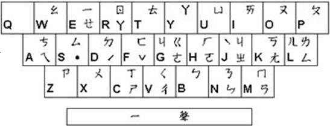

自然輸入法Windows版V11操作手冊第36~37頁
許氏注音鍵盤
「許氏鍵盤」是改良型的注音鍵盤，是由自然輸入法發明人許聞廉博士所創，是將中打、英打合而為一的創新輸入方式，充分利用注音和英文字母的自然對應關係，而不用再依賴對應表，不僅記憶輕鬆，更提升打字速度！
許氏鍵盤之注音配置圖

| 鍵盤字母 | Q | W | E | R | T | Y | U | I | O | P |
| 注音符號 | | ㄠ | ㄝㄧ | ㄖㄚ | ㄊ | ㄚ | ㄩ | ㄞ | ㄡ | ㄆ |
| 拼音符號 | | ao | ê i | r a | t | a | ü | ai | ou | p |
| 直音字 | | 熬 | (耶)衣 | 日啊 | 特 | 啊 | 迂 | 哀 | 歐 | 坡 |
| 鍵盤字母 | A | S | D | F | G | H | J | K | L | |
| 注音符號 | ㄟㄘ | ㄙ˙ | ㄉˊ | ㄈˇ | ㄍㄐㄜ | ㄏㄛ | ㄐㄓˋ | ㄎㄤ | ㄌㄥㄦ | |
| 拼音符號 | ei c | s | d | f | g j e | h o | j zh | k ang | l eng er | |
| 直音字 | 欸雌 | 思 | 得 | 佛 | 哥基鵝 | 喝喔 | 基知 | 科昂 | 勒(亨)兒 | |
| 鍵盤字母 | Z | X | C | V | B | N | M | | | |
| 注音符號 | ㄗ | ㄨ | ㄒㄕ | ㄑㄔ | ㄅ | ㄋㄣ | ㄇㄢ | | | |
| 拼音符號 | z | u | x sh | q ch | b | n en | m an | | | |
| 直音字 | 資 | 烏 | 希詩 | 欺蚩 | 玻 | 訥恩 | 摸安 | | | |
注意：當前各版本R/Y上都有ㄚ，G/J上都有ㄐ；以前R上無ㄚ，G上無ㄐ。
「許氏鍵盤」的對應可分為字母（字音、字形）、字鍵順位與整組記憶（對應）、手順、符號、快速換字等五類，茲分述如下。
| 字音 | ㄅㄆㄇㄈㄉㄊㄋㄌㄍㄎㄏㄐㄐㄒㄖㄗㄙㄝㄞㄟㄡㄣㄚㄧ |
| ＢＰＭＦＤＴＮＬＧＫＨＪＧＣＲＺＳＥＩＡＯＮＲＥ |
| 字形 | ㄑㄚㄠㄢㄤㄥㄦㄨㄩ |
| ＶＹＷＭＫＬＬＸＵ |
| 對應 | ㄓㄔㄕㄘ |
| ＪＶＣＡ |
| 手順 | ˙ ˊ ˇ ㄜㄛˋ |
| ＳＤＦＧＨＪ |
| 符號 | 。、「」『』 其餘符號直接打就是全型符號 |
| ‧ ‘ [ ] { } |
| 換字 | Q |
(1) 字母
字音相似者
■ 利用英文字母所對應的音標發音
ㄅㄆㄇㄈㄉㄊㄋㄌㄍㄎㄏㄐㄖㄗㄙㄝ
ＢＰＭＦＤＴＮＬＧＫＨＪＲＺＳＥ
■ 利用英文字母本身的發音
ㄐㄒㄞㄟㄡㄣㄚㄧ
ＧＣＩＡＯＮＲＥ
字形相似者
ㄠ←W 逆時針轉 90 度
ㄑ←V 逆時針轉 90 度
ㄢ←M 將ㄢ之上下兩部分之中間合併則成ㄋ，再逆時針轉 90 度。
ㄤ←K 逆時針轉 45 度
ㄥ←L 字形相似
ㄦ←L ㄦ的右半邊與 L 相似
ㄚ←Y 字形相似
ㄨ←X 字形相似
ㄩ←U 字形相似
(2) 字鍵順位，整組記憶
基本上，ㄗ和ㄙ也都是利用字母發音來記憶，而ㄘ在整個鍵盤上，放置在 A的位置最理想，因為這樣在注音拼法上絕不會造成混淆，並可將ㄗㄘㄙ放在一起。
ㄗㄘㄙ
ＺＡＳ
在這組鍵位裡，他們也都可以使用字母的音、形對應。
ㄐㄑㄒ
ＪＶＣ
ㄐ→J 音標相似
ㄑ→V 字形聯想
ㄒ→C 發音相近
另外，再利用ㄐㄑㄒ與ㄓㄔㄕ的對稱性，加強聯想。
(3) 手順
這個部份的設計是為了手指方便所做的考慮。
ㄜ→G，ㄛ→H
聲調鍵
一聲→Space
二聲→D
三聲→F
四聲→J
輕聲→S
(4) 標點符號（其餘符號直接打鍵盤上的符號，就是全型符號。）
標點符號 ， 。 ？ ； ： 、 「 」 『 』 （ ）
許氏鍵盤 ， ‧ ？ ； ： ‘ [ ] { } ( )